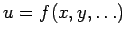
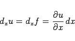

Inhalt Index DeskTop Bronstein

 Differentialrechnung Differentiation von Funktionen von mehreren Veränderlichen Partielle Ableitungen
Differentialrechnung Differentiation von Funktionen von mehreren Veränderlichen Partielle Ableitungen


Von einer Funktion von mehreren Veränderlichen  kann das partielle Differential nach einer dieser Veränderlichen, z.B. nach x gebildet werden, was durch die Gleichung
|  | (6.40) |
definiert ist.